Web Server Statistics for short.terapk.com
Web Server Statistics for short.terapk.com
Program started on Sun, Jul 12 2026 at 1:10 PM.
Analyzed requests from Thu, Nov 20 2025 at 10:12 AM to Sat, Jul 11 2026 at 10:16 PM (233.50 days).
Web Server Statistics for short.terapk.comProgram started on Sun, Jul 12 2026 at 1:10 PM.
Analyzed requests from Thu, Nov 20 2025 at 10:12 AM to Sat, Jul 11 2026 at 10:16 PM (233.50 days).
(Go To: Top | General Summary | Monthly Report | Daily Summary | Hourly Summary | Domain Report | Organization Report | Redirected Referrer Report | Failed Referrer Report | Referring Site Report | Browser Report | Browser Summary | Operating System Report | Status Code Report | File Size Report | File Type Report | Directory Report | Request Report)
Figures in parentheses refer to the 7-day period ending Jul 12 2026 at 1:10 PM.
Successful requests: 708 (8)
Average successful requests per day: 3 (1)
Successful requests for pages: 11 (0)
Failed requests: 3,487 (1)
Redirected requests: 901 (2)
Distinct files requested: 228 (1,461)
Distinct hosts served: 199 (789)
Data transferred: 3.85 megabytes (131.64 kilobytes)
Average data transferred per day: 16.87 kilobytes (18.81 kilobytes)
(Go To: Top | General Summary | Monthly Report | Daily Summary | Hourly Summary | Domain Report | Organization Report | Redirected Referrer Report | Failed Referrer Report | Referring Site Report | Browser Report | Browser Summary | Operating System Report | Status Code Report | File Size Report | File Type Report | Directory Report | Request Report)
Each unit ( ) represents 1 request for a page.
) represents 1 request for a page.
| month | #reqs | #pages | |
|---|---|---|---|
| Nov 2025 | 22 | 8 |  |
| Dec 2025 | 43 | 1 | |
| Jan 2026 | 98 | 0 | |
| Feb 2026 | 71 | 0 | |
| Mar 2026 | 98 | 2 |  |
| Apr 2026 | 18 | 0 | |
| May 2026 | 134 | 0 | |
| Jun 2026 | 214 | 0 | |
| Jul 2026 | 10 | 0 |
Busiest month: Nov 2025 (8 requests for pages).
(Go To: Top | General Summary | Monthly Report | Daily Summary | Hourly Summary | Domain Report | Organization Report | Redirected Referrer Report | Failed Referrer Report | Referring Site Report | Browser Report | Browser Summary | Operating System Report | Status Code Report | File Size Report | File Type Report | Directory Report | Request Report)
Each unit () represents 1 request for a page.
| day | #reqs | #pages | |
|---|---|---|---|
| Sun | 57 | 0 | |
| Mon | 82 | 2 | |
| Tue | 264 | 0 | |
| Wed | 39 | 0 | |
| Thu | 50 | 7 |  |
| Fri | 77 | 1 | |
| Sat | 139 | 1 | |
(Go To: Top | General Summary | Monthly Report | Daily Summary | Hourly Summary | Domain Report | Organization Report | Redirected Referrer Report | Failed Referrer Report | Referring Site Report | Browser Report | Browser Summary | Operating System Report | Status Code Report | File Size Report | File Type Report | Directory Report | Request Report)
Each unit () represents 1 request for a page.
| hour | #reqs | #pages | |
|---|---|---|---|
| 0 | 9 | 0 | |
| 1 | 1 | 0 | |
| 2 | 34 | 0 | |
| 3 | 18 | 0 | |
| 4 | 7 | 1 | |
| 5 | 202 | 0 | |
| 6 | 18 | 0 | |
| 7 | 42 | 0 | |
| 8 | 7 | 0 | |
| 9 | 12 | 0 | |
| 10 | 49 | 1 | |
| 11 | 19 | 0 | |
| 12 | 16 | 0 | |
| 13 | 8 | 2 | |
| 14 | 13 | 1 | |
| 15 | 18 | 2 | |
| 16 | 8 | 0 | |
| 17 | 37 | 0 | |
| 18 | 21 | 1 | |
| 19 | 85 | 1 | |
| 20 | 21 | 1 | |
| 21 | 51 | 1 | |
| 22 | 8 | 0 | |
| 23 | 4 | 0 |
(Go To: Top | General Summary | Monthly Report | Daily Summary | Hourly Summary | Domain Report | Organization Report | Redirected Referrer Report | Failed Referrer Report | Referring Site Report | Browser Report | Browser Summary | Operating System Report | Status Code Report | File Size Report | File Type Report | Directory Report | Request Report)

Listing domains, sorted by the amount of traffic.
| #reqs | %bytes | domain |
|---|---|---|
| 705 | 99.99% | [unresolved numerical addresses] |
| 3 | 0.01% | [domain not given] |
(Go To: Top | General Summary | Monthly Report | Daily Summary | Hourly Summary | Domain Report | Organization Report | Redirected Referrer Report | Failed Referrer Report | Referring Site Report | Browser Report | Browser Summary | Operating System Report | Status Code Report | File Size Report | File Type Report | Directory Report | Request Report)
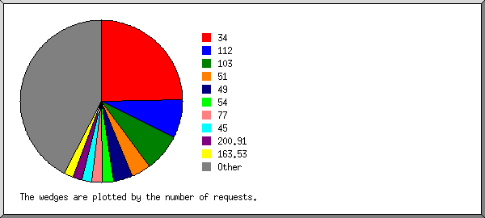
Listing the top 20 organizations by the number of requests, sorted by the number of requests.
| #reqs | %bytes | organization |
|---|---|---|
| 175 | 0.56% | 34 |
| 54 | 14.28% | 112 |
| 53 | 10.25% | 103 |
| 28 | 0.33% | 51 |
| 27 | 5.13% | 49 |
| 15 | 0.97% | 54 |
| 15 | 4.55% | 77 |
| 14 | 2.57% | 45 |
| 13 | 2.56% | 200.91 |
| 13 | 2.56% | 163.53 |
| 13 | 2.43% | 66.249 |
| 13 | 3.89% | 66.102 |
| 13 | 2.56% | 201.157 |
| 13 | 2.56% | 176.235 |
| 13 | 2.56% | 36 |
| 13 | 2.56% | 105 |
| 13 | 2.56% | 67.61 |
| 13 | 2.56% | 43 |
| 12 | 2.56% | 124 |
| 8 | 4.81% | 57 |
| 177 | 27.18% | [not listed: 76 organizations] |
(Go To: Top | General Summary | Monthly Report | Daily Summary | Hourly Summary | Domain Report | Organization Report | Redirected Referrer Report | Failed Referrer Report | Referring Site Report | Browser Report | Browser Summary | Operating System Report | Status Code Report | File Size Report | File Type Report | Directory Report | Request Report)
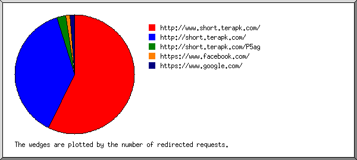
Listing referring URLs, sorted by the number of redirected requests.
| #reqs | URL |
|---|---|
| 48 | http://www.short.terapk.com/ |
| 32 | http://short.terapk.com/ |
| 2 | http://short.terapk.com/P5ag |
| 1 | https://www.facebook.com/ |
| 1 | https://www.google.com/ |
(Go To: Top | General Summary | Monthly Report | Daily Summary | Hourly Summary | Domain Report | Organization Report | Redirected Referrer Report | Failed Referrer Report | Referring Site Report | Browser Report | Browser Summary | Operating System Report | Status Code Report | File Size Report | File Type Report | Directory Report | Request Report)
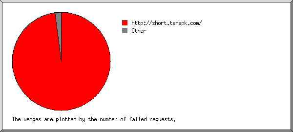
Listing referring URLs, sorted by the number of failed requests.
| #reqs | URL |
|---|---|
| 102 | http://short.terapk.com/ |
| 1 | https://www.google.com/ |
| 1 | https://wordpress.org/ |
(Go To: Top | General Summary | Monthly Report | Daily Summary | Hourly Summary | Domain Report | Organization Report | Redirected Referrer Report | Failed Referrer Report | Referring Site Report | Browser Report | Browser Summary | Operating System Report | Status Code Report | File Size Report | File Type Report | Directory Report | Request Report)
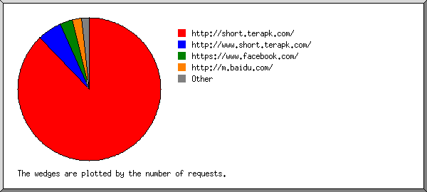
Listing referring sites, sorted by the number of requests.
| #reqs | site |
|---|---|
| 303 | http://short.terapk.com/ |
| 19 | http://www.short.terapk.com/ |
| 10 | https://www.facebook.com/ |
| 7 | http://m.baidu.com/ |
| 3 | http://m.facebook.com/ |
| 3 | https://l.facebook.com/ |
(Go To: Top | General Summary | Monthly Report | Daily Summary | Hourly Summary | Domain Report | Organization Report | Redirected Referrer Report | Failed Referrer Report | Referring Site Report | Browser Report | Browser Summary | Operating System Report | Status Code Report | File Size Report | File Type Report | Directory Report | Request Report)
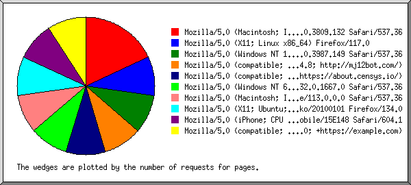
Listing browsers with at least 1 request for a page, sorted by the number of requests for pages.
| #reqs | #pages | browser |
|---|---|---|
| 2 | 2 | Mozilla/5.0 (Macintosh; Intel Mac OS X 10_14_6) AppleWebKit/537.36 (KHTML, like Gecko) Chrome/76.0.3809.132 Safari/537.36 |
| 1 | 1 | Mozilla/5.0 (X11; Linux x86_64) Firefox/117.0 |
| 1 | 1 | Mozilla/5.0 (Windows NT 10.0; Win64; x64) AppleWebKit/537.36 (KHTML, like Gecko) Chrome/80.0.3987.149 Safari/537.36 |
| 60 | 1 | Mozilla/5.0 (compatible; MJ12bot/v1.4.8; http://mj12bot.com/) |
| 2 | 1 | Mozilla/5.0 (compatible; CensysInspect/1.1; +https://about.censys.io/) |
| 1 | 1 | Mozilla/5.0 (Windows NT 6.2; Win64; x64) AppleWebKit/537.36 (KHTML, like Gecko) Chrome/32.0.1667.0 Safari/537.36 |
| 1 | 1 | Mozilla/5.0 (Macintosh; Intel Mac OS X 10_15_7) AppleWebKit/537.36 (KHTML, like Gecko) Chrome/113.0.0.0 Safari/537.36 |
| 1 | 1 | Mozilla/5.0 (X11; Ubuntu; Linux x86_64; rv:134.0) Gecko/20100101 Firefox/134.0 |
| 1 | 1 | Mozilla/5.0 (iPhone; CPU iPhone OS 14_4 like Mac OS X) AppleWebKit/605.1.15 (KHTML, like Gecko) Version/15.4 Mobile/15E148 Safari/604.1 |
| 1 | 1 | Mozilla/5.0 (compatible; CMS-Checker/1.0; +https://example.com) |
| 631 | 0 | [not listed: 216 browsers] |
(Go To: Top | General Summary | Monthly Report | Daily Summary | Hourly Summary | Domain Report | Organization Report | Redirected Referrer Report | Failed Referrer Report | Referring Site Report | Browser Report | Browser Summary | Operating System Report | Status Code Report | File Size Report | File Type Report | Directory Report | Request Report)
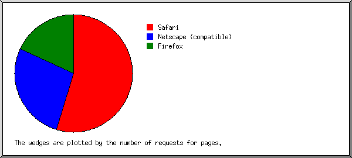
Listing browsers with at least 1 request for a page, sorted by the number of requests for pages.
| # | #reqs | #pages | browser |
|---|---|---|---|
| 1 | 488 | 6 | Safari |
| 435 | 5 | Safari/537 | |
| 3 | 1 | Safari/604 | |
| 2 | 85 | 3 | Netscape (compatible) |
| 3 | 40 | 2 | Firefox |
| 1 | 1 | Firefox/134 | |
| 1 | 1 | Firefox/117 | |
| 89 | 0 | [not listed: 27 browsers] |
(Go To: Top | General Summary | Monthly Report | Daily Summary | Hourly Summary | Domain Report | Organization Report | Redirected Referrer Report | Failed Referrer Report | Referring Site Report | Browser Report | Browser Summary | Operating System Report | Status Code Report | File Size Report | File Type Report | Directory Report | Request Report)
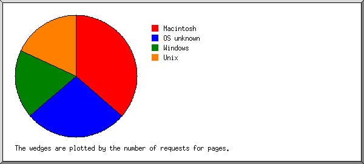
Listing operating systems, sorted by the number of requests for pages.
| # | #reqs | #pages | OS |
|---|---|---|---|
| 1 | 76 | 4 | Macintosh |
| 2 | 151 | 3 | OS unknown |
| 3 | 270 | 2 | Windows |
| 225 | 1 | Windows NT | |
| 41 | 1 | Unknown Windows | |
| 1 | 0 | Windows ME | |
| 1 | 0 | Windows Server 2003 | |
| 2 | 0 | Windows XP | |
| 4 | 190 | 2 | Unix |
| 184 | 2 | Linux | |
| 1 | 0 | IRIX | |
| 1 | 0 | SunOS | |
| 4 | 0 | BSD | |
| 5 | 9 | 0 | Known robots |
| 6 | 2 | 0 | BeOS |
| 7 | 2 | 0 | OS/2 |
| 8 | 1 | 0 | Palm OS |
| 9 | 1 | 0 | Symbian OS |
(Go To: Top | General Summary | Monthly Report | Daily Summary | Hourly Summary | Domain Report | Organization Report | Redirected Referrer Report | Failed Referrer Report | Referring Site Report | Browser Report | Browser Summary | Operating System Report | Status Code Report | File Size Report | File Type Report | Directory Report | Request Report)
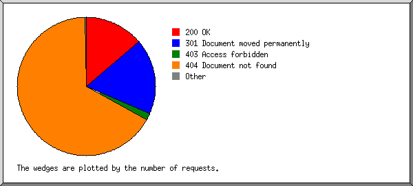
Listing status codes, sorted numerically.
| #reqs | status code |
|---|---|
| 708 | 200 OK |
| 899 | 301 Document moved permanently |
| 2 | 302 Document found elsewhere |
| 80 | 403 Access forbidden |
| 3394 | 404 Document not found |
| 13 | 500 Internal server error |
(Go To: Top | General Summary | Monthly Report | Daily Summary | Hourly Summary | Domain Report | Organization Report | Redirected Referrer Report | Failed Referrer Report | Referring Site Report | Browser Report | Browser Summary | Operating System Report | Status Code Report | File Size Report | File Type Report | Directory Report | Request Report)
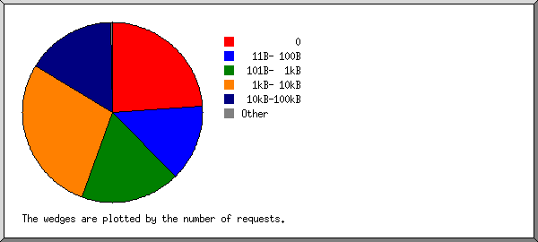
| size | #reqs | %bytes |
|---|---|---|
| 0 | 170 | |
| 1B- 10B | 0 | |
| 11B- 100B | 96 | 0.07% |
| 101B- 1kB | 126 | 0.63% |
| 1kB- 10kB | 200 | 19.36% |
| 10kB-100kB | 114 | 71.77% |
| 100kB- 1MB | 2 | 8.17% |
(Go To: Top | General Summary | Monthly Report | Daily Summary | Hourly Summary | Domain Report | Organization Report | Redirected Referrer Report | Failed Referrer Report | Referring Site Report | Browser Report | Browser Summary | Operating System Report | Status Code Report | File Size Report | File Type Report | Directory Report | Request Report)
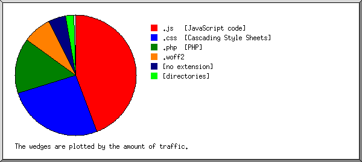
Listing extensions with at least 0.1% of the traffic, sorted by the amount of traffic.
| #reqs | %bytes | extension |
|---|---|---|
| 150 | 44.23% | .js [JavaScript code] |
| 110 | 25.83% | .css [Cascading Style Sheets] |
| 31 | 14.94% | .php [PHP] |
| 4 | 7.65% | .woff2 |
| 115 | 4.78% | [no extension] |
| 11 | 2.11% | [directories] |
| 89 | 0.44% | .ico |
| 198 | 0.03% | [not listed: 13 extensions] |
(Go To: Top | General Summary | Monthly Report | Daily Summary | Hourly Summary | Domain Report | Organization Report | Redirected Referrer Report | Failed Referrer Report | Referring Site Report | Browser Report | Browser Summary | Operating System Report | Status Code Report | File Size Report | File Type Report | Directory Report | Request Report)
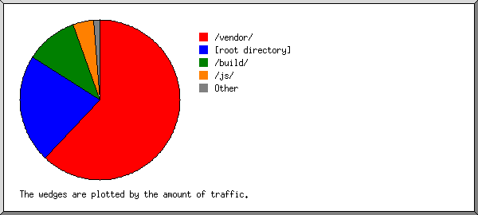
Listing directories with at least 0.01% of the traffic, sorted by the amount of traffic.
| #reqs | %bytes | directory |
|---|---|---|
| 187 | 61.98% | /vendor/ |
| 330 | 22.01% | [root directory] |
| 4 | 10.52% | /build/ |
| 50 | 4.37% | /js/ |
| 22 | 0.84% | /css/ |
| 3 | 0.13% | /auth/ |
| 2 | 0.08% | /pages/ |
| 21 | 0.04% | /.well-known/ |
| 9 | 0.02% | /links/ |
| 80 | [not listed: 21 directories] |
(Go To: Top | General Summary | Monthly Report | Daily Summary | Hourly Summary | Domain Report | Organization Report | Redirected Referrer Report | Failed Referrer Report | Referring Site Report | Browser Report | Browser Summary | Operating System Report | Status Code Report | File Size Report | File Type Report | Directory Report | Request Report)
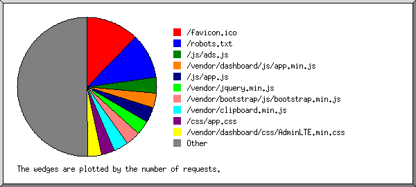
Listing files with at least 20 requests, sorted by the number of requests.
| #reqs | %bytes | last time | file |
|---|---|---|---|
| 88 | 0.43% | Jul/ 1/26 10:15 AM | /favicon.ico |
| 74 | 0.03% | Jul/11/26 10:23 AM | /robots.txt |
| 26 | 0.12% | Jun/30/26 3:40 AM | /js/ads.js |
| 26 | 0.12% | Jun/30/26 3:40 AM | /js/ads.js?ver=6.6.1 |
| 24 | 1.98% | Jun/30/26 3:40 AM | /vendor/dashboard/js/app.min.js |
| 24 | 1.98% | Jun/30/26 3:40 AM | /vendor/dashboard/js/app.min.js?ver=6.6.1 |
| 24 | 4.25% | Jun/30/26 3:40 AM | /js/app.js |
| 24 | 4.25% | Jun/30/26 3:40 AM | /js/app.js?ver=6.6.1 |
| 24 | 19.10% | Jun/30/26 3:40 AM | /vendor/jquery.min.js |
| 24 | 19.10% | Jun/30/26 3:40 AM | /vendor/jquery.min.js?ver=6.6.1 |
| 24 | 7.20% | Jun/30/26 3:40 AM | /vendor/bootstrap/js/bootstrap.min.js |
| 24 | 7.20% | Jun/30/26 3:40 AM | /vendor/bootstrap/js/bootstrap.min.js?ver=6.6.1 |
| 24 | 2.17% | Jun/30/26 3:40 AM | /vendor/clipboard.min.js |
| 24 | 2.17% | Jun/30/26 3:40 AM | /vendor/clipboard.min.js?ver=6.6.1 |
| 22 | 0.84% | Jun/30/26 3:40 AM | /css/app.css |
| 22 | 0.84% | Jun/30/26 3:40 AM | /css/app.css?ver=6.6.1 |
| 22 | 8.01% | Jun/30/26 3:40 AM | /vendor/dashboard/css/AdminLTE.min.css |
| 22 | 8.01% | Jun/30/26 3:40 AM | /vendor/dashboard/css/AdminLTE.min.css?ver=6.6.1 |
| 22 | 1.81% | Jun/30/26 3:40 AM | /vendor/dashboard/css/skins/_all-skins.min.css |
| 22 | 1.81% | Jun/30/26 3:40 AM | /vendor/dashboard/css/skins/_all-skins.min.css?ver=6.6.1 |
| 22 | 3.82% | Jun/30/26 3:40 AM | /vendor/font-awesome/css/font-awesome.min.css |
| 22 | 3.82% | Jun/30/26 3:40 AM | /vendor/font-awesome/css/font-awesome.min.css?ver=6.6.1 |
| 21 | 10.24% | Jun/30/26 3:40 AM | /vendor/bootstrap/css/bootstrap.min.css |
| 21 | 10.24% | Jun/30/26 3:40 AM | /vendor/bootstrap/css/bootstrap.min.css?ver=6.6.1 |
| 291 | 40.01% | Jul/ 8/26 10:47 PM | [not listed: 200 files] |